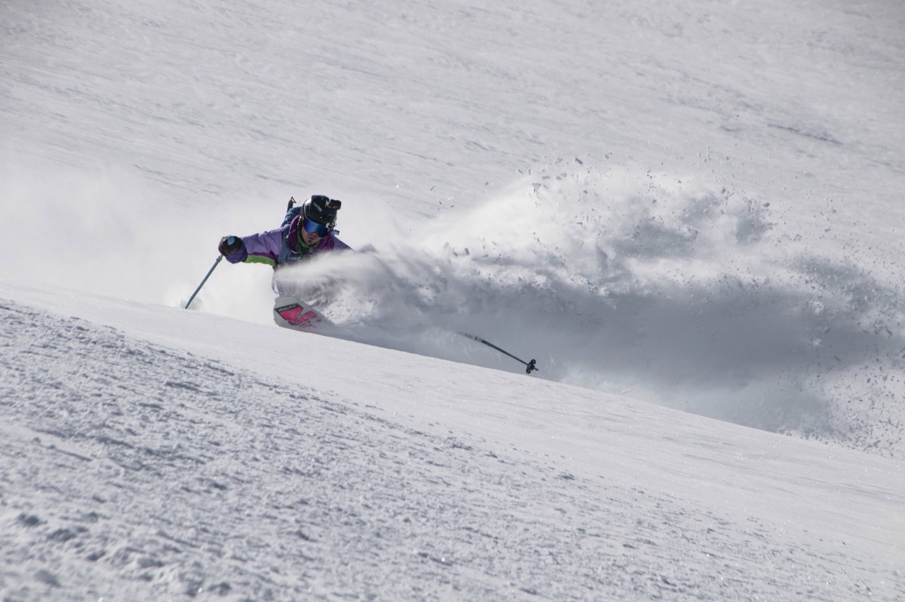
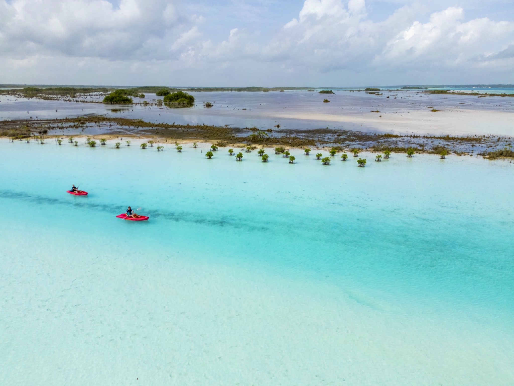
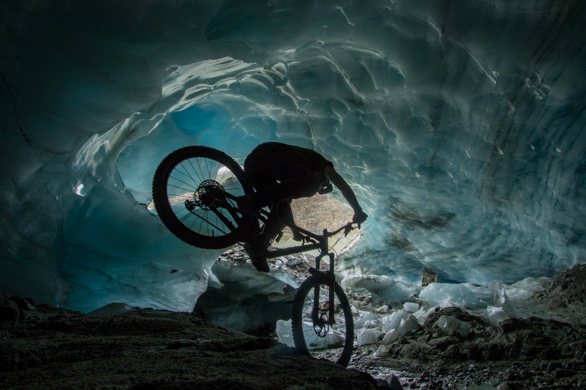
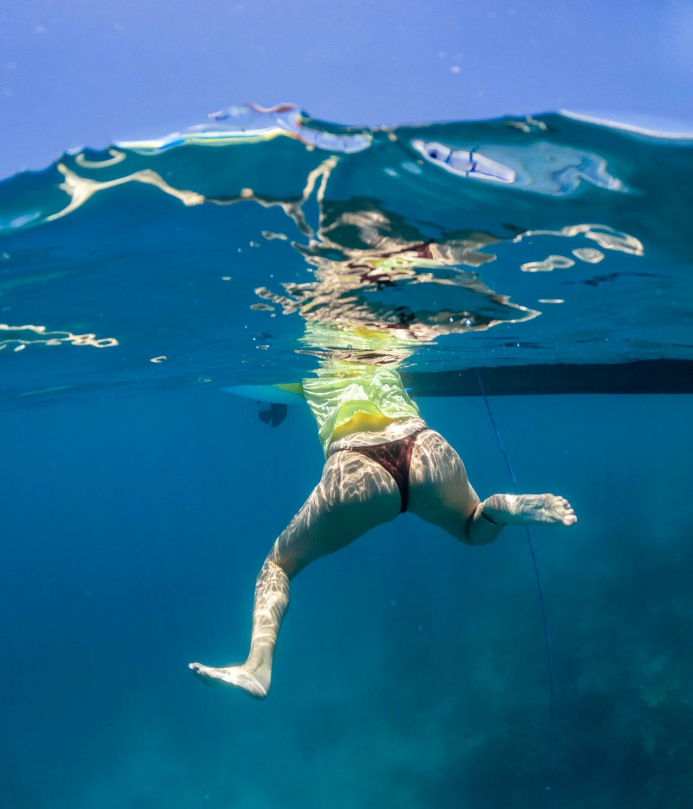
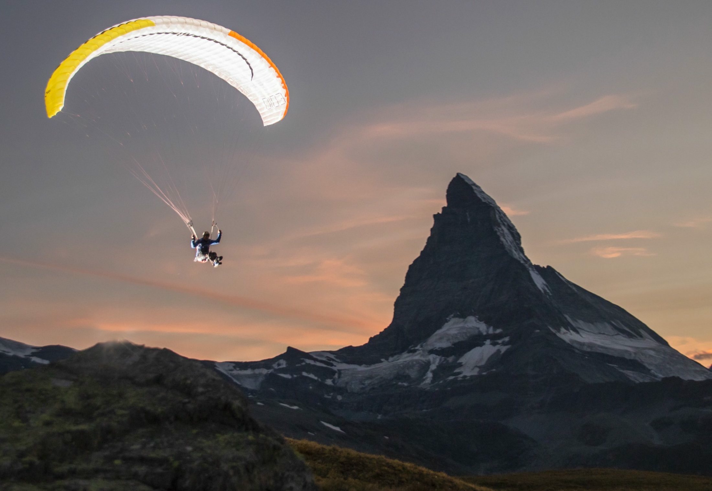
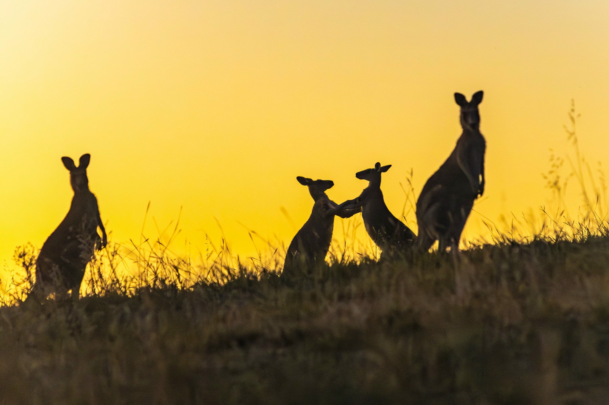

Nuevas imágenes para
vuestras campañas.
Creamos fotografía y vídeo para que vuestro equipo o agencia los incorpore a los formatos y canales que utilice la marca.

FOTOGRAFÍA Y VÍDEO · UNA PROPUESTA PARA INTERMUNDIAL
Imágenes para conectar vuestra marca con las experiencias que impulsan a la gente a viajar.
DESCUBRIR LA PROPUESTA ↘Una producción visual para que Intermundial cuente las experiencias que acompaña.
Desde el primer día de nieve hasta un viaje al otro lado del mundo, propongo crear imágenes que conecten vuestros seguros de viaje y deporte con las personas que los eligen.
Fotografía y vídeo nuevos para vuestras campañas, web, redes y comunicación comercial. Una producción adaptada a los productos, públicos y mercados que vuestro equipo quiera impulsar.

UNA IDEA PARA VUESTRA MARCA
Retratar el recorrido desde dentro: la preparación, el movimiento y los pequeños momentos que hacen que un viaje sea inolvidable.
Una forma de acompañar visualmente la promesa de estar al lado del viajero antes, durante y después de su experiencia.
EXPLORAR LAS HISTORIAS ↘Ideas iniciales basadas en las líneas de seguros que presenta Intermundial, para definir juntos según vuestros objetivos.
Rutas, paisajes y momentos compartidos para dar vida a campañas de seguros de viaje. Un relato de experiencias cotidianas y grandes viajes, pensado para distintos públicos.
Fotografiar y grabar esquí, snowboard y vida en la montaña con una mirada cercana a la experiencia deportiva. Una línea visual para campañas relacionadas con Wintersports.
Ciclismo, senderismo y actividades al aire libre, desde la preparación hasta el disfrute. Imágenes para conectar con viajeros activos y la comunicación de Totalsports.
Contenido de mar, buceo y deportes acuáticos que ayude a mostrar el universo de Aquasports, con escenas adaptadas a la campaña.



La propuesta se ajusta a lo que necesitáis y al tiempo que requiera cada producción.
Los usos, formatos, duración, localizaciones y licencia se acuerdan para cada proyecto. Juan conserva la autoría y la propiedad del material.

UNA MIRADA INTERNACIONAL
He trabajado y viajado en distintos países. Esa experiencia, junto con equipos y colaboradores locales, ayuda a construir una producción cercana a cada lugar.
Soy fotógrafo y realizador con base en Bilbao. He vivido diez años en Suiza y he trabajado en proyectos de viaje, naturaleza y deportes de montaña. Cuento con un equipo para producir fotografía y vídeo a medida.
Las fotografías de esta página son de mi archivo y muestran mi estilo. La campaña para Intermundial se crearía según vuestro briefing.
VER MI TRABAJO ↗FITUR 2027 · MADRID
Me gustaría conocer vuestras prioridades y explorar qué podemos crear juntos para Intermundial.
HABLEMOS DEL PROYECTO ↗aizpurumedia.com ↗